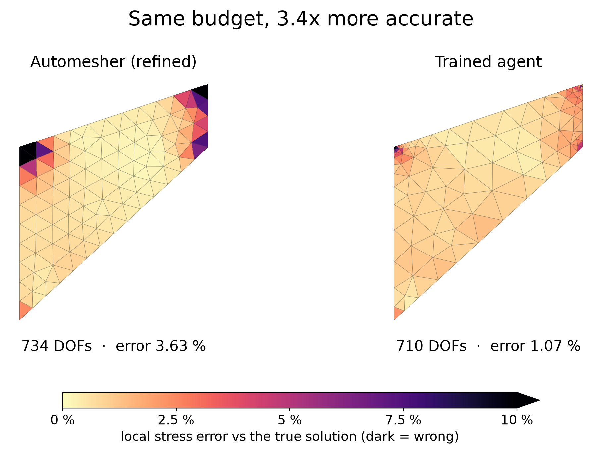
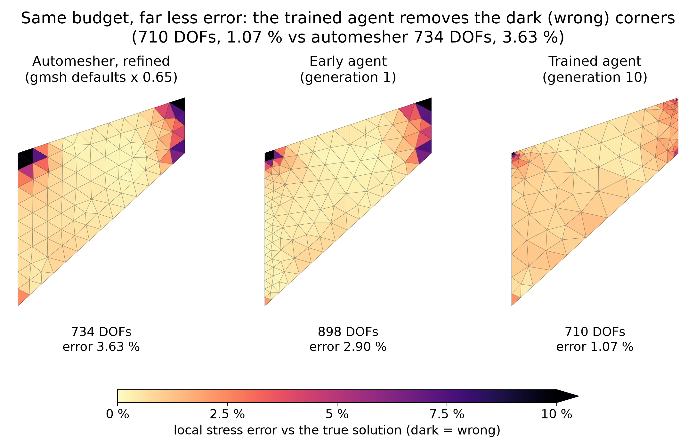
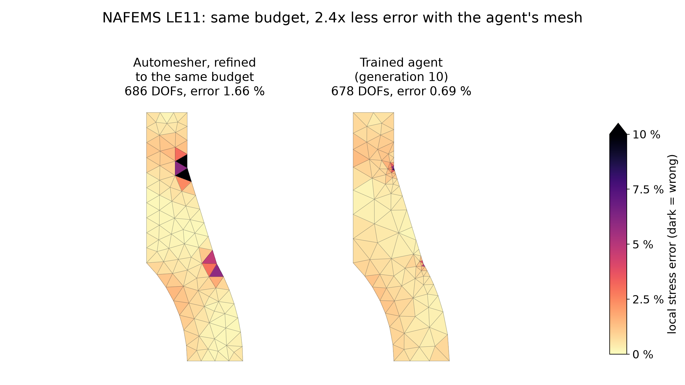
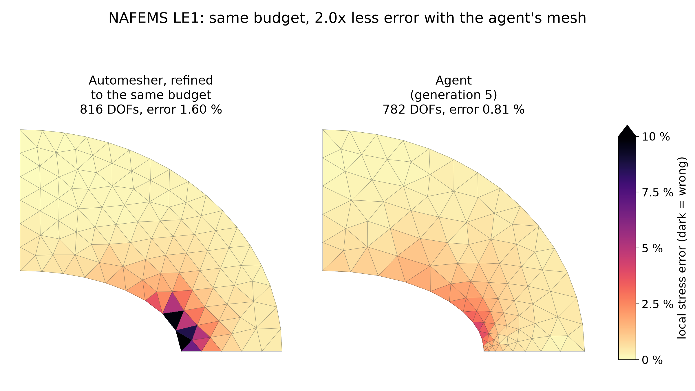
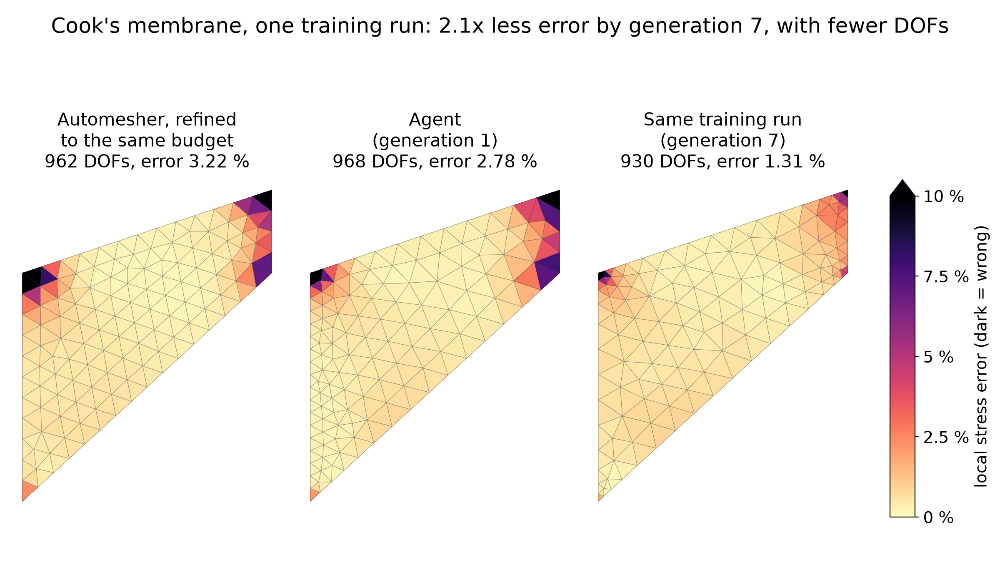
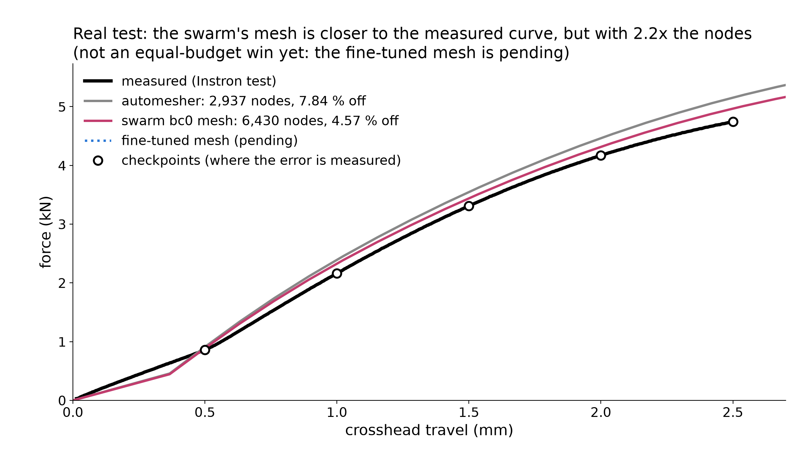

Equal-budget mesh figures
Every comparison: the improved mesh has no more DOFs than what it is compared with, and lower error; only correct-setup runs; every number re-solved from the run files. Error maps share one linear scale, 0-10 %, dark = wrong.
Headline: Cook's membrane at an equal DOF budget
Same budget, 3.4x more accurate
Same budget (710 vs 734 DOFs), 3.4x less error: 1.07 % vs 3.63 %. The automesher's dark corners disappear.

Full caption, sources and caveats (PDF)
Slide version of fig_cook_equal_error: (left) (1) gmsh automesher with every element 0.65 x gmsh's default size, quadratic, correct setup (734 DOFs, 3.63 %; row factor 0.65 of talk_plots/act1_agentic_works/automesher_sweep.json); (right) trained agent g10-cooks_membrane-a7 (710 DOFs, 1.07 %). 3.38x = 3.63 % / 1.07 %, with 24 fewer DOFs for the agent. Error map: the scored error, element by element. For each element, e_el = sqrt(error energy density averaged over the element / reference energy density averaged over the part), from the 12849 reference integration points (error = stress of the mesh minus the reference stress, energy density s : C^-1 : s). By construction the area-weighted mean of e_el^2 is the field error squared (recomputed from the maps: 3.63 %, 2.90 %, 1.07 %), so the dark elements are where the number under the panel comes from. Linear colour scale 0-10 %, clipped above, identical on all panels; dark = wrong. The worst 5 % of elements hold 90 % (automesher), 91 % (early) and 17 % (trained) of the squared error: the automesher's error sits at the two corners (the clamped top-left corner and the loaded top-right corner); the trained agent spends its DOFs there and spreads the remaining error evenly. Honest note: in the interior the trained agent's elements are larger and its local error is a little higher (median element 1.05 % vs 0.58 % for the automesher); both are pale on this scale. Cook's membrane (plane stress, E = 1, nu = 1/3, unit total shear load on the right edge; dimensionless stress). Error = relative energy-norm error of the whole stress field vs the fine reference (ace/field_refs/cooks_membrane.npz, 68,970 DOFs; a coarser reference solve differs from it by 0.39 %), the field error the runs were scored with. Every mesh was rebuilt and re-solved with the fixed skfem solver; re-solved errors and DOFs match the stored ones (data/cook_panels.json).
Setup check: both agents wrote the load as a traction 0.0625 on the 16-long loaded edge (= total force 1) and nu = 0.3333333; solving their meshes with ace/checks.py reference_setup gives the same field error (2.90 %, 1.07 %), so both setups are correct.
Cook's membrane at an equal DOF budget: error maps
Automesher 3.63 % (734 DOFs) -> early agent 2.90 % (898) -> trained agent 1.07 % (710): fewer DOFs, less error.

Full caption, sources and caveats (PDF)
Where each mesh is wrong. Left to right: (1) gmsh automesher with every element 0.65 x gmsh's default size, quadratic, correct setup (734 DOFs, 3.63 %; row factor 0.65 of talk_plots/act1_agentic_works/automesher_sweep.json); (2) early agent g1-cooks_membrane-a3 (ace_runs/cook_auto/gen1/runs/g1-cooks_membrane-a3.json; 898 DOFs, 2.90 %; mesh request {"h": 5, "order": 2, "refinements": [{"group": "clamped", "size": 2.5, "radius": 10}]}); (3) trained agent g10-cooks_membrane-a7 (ace_runs/deep1/gen10/runs/g10-cooks_membrane-a7.json; 710 DOFs, 1.07 %; mesh request {"h": 8.5, "order": 2, "refinements": [{"point": [0, 44], "size": 0.55, "radius": 11}, {"point": [48, 60], "size": 0.55, "radius": 9}, {"point": [48, 44], "size": 1.5, "radius": 6}, {"point": [0, 0], "size": 3, "radius": 4}, {"group": "loaded", "size": 3, "radius": 6.5}, {"point": [15, 28.5], "size": 4.2, "radius": 9.5}, {"point": [41.5, 50.5], "size": 3.6, "radius": 7}, {"point": [2.5, 32.5], "size": 3.5, "radius": 7}, {"point": [11, 16], "size": 3.8, "radius": 8.5}]}). Error map: the scored error, element by element. For each element, e_el = sqrt(error energy density averaged over the element / reference energy density averaged over the part), from the 12849 reference integration points (error = stress of the mesh minus the reference stress, energy density s : C^-1 : s). By construction the area-weighted mean of e_el^2 is the field error squared (recomputed from the maps: 3.63 %, 2.90 %, 1.07 %), so the dark elements are where the number under the panel comes from. Linear colour scale 0-10 %, clipped above, identical on all panels; dark = wrong. The worst 5 % of elements hold 90 % (automesher), 91 % (early) and 17 % (trained) of the squared error: the automesher's error sits at the two corners (the clamped top-left corner and the loaded top-right corner); the trained agent spends its DOFs there and spreads the remaining error evenly. Honest note: in the interior the trained agent's elements are larger and its local error is a little higher (median element 1.05 % vs 0.58 % for the automesher); both are pale on this scale. Cook's membrane (plane stress, E = 1, nu = 1/3, unit total shear load on the right edge; dimensionless stress). Error = relative energy-norm error of the whole stress field vs the fine reference (ace/field_refs/cooks_membrane.npz, 68,970 DOFs; a coarser reference solve differs from it by 0.39 %), the field error the runs were scored with. Every mesh was rebuilt and re-solved with the fixed skfem solver; re-solved errors and DOFs match the stored ones (data/cook_panels.json).
Setup check: both agents wrote the load as a traction 0.0625 on the 16-long loaded edge (= total force 1) and nu = 0.3333333; solving their meshes with ace/checks.py reference_setup gives the same field error (2.90 %, 1.07 %), so both setups are correct.
Caveats: the early agent is from a different training run (ace_runs/cook_auto) than the trained agent (ace_runs/deep1), whose own generation-0/1 agents used fewer DOFs (252-532), so they do not fit an equal-budget comparison. The early run shown has the highest field error of the 6 generation-1 runs of cook_auto (all have 772-1092 DOFs, 2.19-2.90 %; its generation 0: 6 identical runs, 772 DOFs, 2.48 %). The automesher row has 24 more DOFs than the trained agent.
Cook's membrane at an equal DOF budget: solved stress
The same meshes as stress plots: the difference shows only in the magnified corner, so use the error maps on slides.

Full caption, sources and caveats (PDF)
Solved von Mises stress on one colour scale (Turbo, 1st-99th percentile of the reference, as the agent dashboard). Left to right: (1) gmsh automesher with every element 0.65 x gmsh's default size, quadratic, correct setup (734 DOFs, 3.63 %; row factor 0.65 of talk_plots/act1_agentic_works/automesher_sweep.json); (2) early agent g1-cooks_membrane-a3 (ace_runs/cook_auto/gen1/runs/g1-cooks_membrane-a3.json; 898 DOFs, 2.90 %; mesh request {"h": 5, "order": 2, "refinements": [{"group": "clamped", "size": 2.5, "radius": 10}]}); (3) trained agent g10-cooks_membrane-a7 (ace_runs/deep1/gen10/runs/g10-cooks_membrane-a7.json; 710 DOFs, 1.07 %; mesh request {"h": 8.5, "order": 2, "refinements": [{"point": [0, 44], "size": 0.55, "radius": 11}, {"point": [48, 60], "size": 0.55, "radius": 9}, {"point": [48, 44], "size": 1.5, "radius": 6}, {"point": [0, 0], "size": 3, "radius": 4}, {"group": "loaded", "size": 3, "radius": 6.5}, {"point": [15, 28.5], "size": 4.2, "radius": 9.5}, {"point": [41.5, 50.5], "size": 3.6, "radius": 7}, {"point": [2.5, 32.5], "size": 3.5, "radius": 7}, {"point": [11, 16], "size": 3.8, "radius": 8.5}]}). (4) true solution. Boxes in the lower right magnify the clamped top-left corner (x 0-10, y 37-47.5), where the stress peaks. Cook's membrane (plane stress, E = 1, nu = 1/3, unit total shear load on the right edge; dimensionless stress). Error = relative energy-norm error of the whole stress field vs the fine reference (ace/field_refs/cooks_membrane.npz, 68,970 DOFs; a coarser reference solve differs from it by 0.39 %), the field error the runs were scored with. Every mesh was rebuilt and re-solved with the fixed skfem solver; re-solved errors and DOFs match the stored ones (data/cook_panels.json).
Setup check: both agents wrote the load as a traction 0.0625 on the 16-long loaded edge (= total force 1) and nu = 0.3333333; solving their meshes with ace/checks.py reference_setup gives the same field error (2.90 %, 1.07 %), so both setups are correct.
Caveats: the early agent is from a different training run (ace_runs/cook_auto) than the trained agent (ace_runs/deep1), whose own generation-0/1 agents used fewer DOFs (252-532), so they do not fit an equal-budget comparison. The early run shown has the highest field error of the 6 generation-1 runs of cook_auto (all have 772-1092 DOFs, 2.19-2.90 %; its generation 0: 6 identical runs, 772 DOFs, 2.48 %). The automesher row has 24 more DOFs than the trained agent.
Gallery: more equal-budget wins (same colour scale, dark = wrong)
LE11 axisymmetric at an equal DOF budget
NAFEMS LE11: the agent has 8 fewer DOFs (678 vs 686) and 2.4x less error (0.69 % vs 1.66 %).

Full caption, sources and caveats (PDF)
NAFEMS LE11 (thermal stress, axisymmetric cross-section), run ace_runs/deep1. Left: the automesher refined by factor 0.626 (686 DOFs, 150 elements, scored error 1.66 % (field 1.66 %, probe points 0.21 %)). Right: g10-nafems_le11_axisym-a3 (ace_runs/deep1/gen10/runs/g10-nafems_le11_axisym-a3.json; 678 DOFs, 146 elements, scored error 0.69 % (field 0.69 %, probe points 0.38 %)). The agent has 8 fewer DOFs and 2.40x lower error. Mesh request: {"h": 0.2, "order": 2, "refinements": [{"point": [1.0, 1.39], "size": 0.016, "radius": 0.22}, {"point": [1.2124, 0.7], "size": 0.021, "radius": 0.21}, {"point": [0.97, 0.36], "size": 0.07, "radius": 0.2}, {"point": [0.86, 0.58], "size": 0.07, "radius": 0.2}, {"point": [0.8, 1.55], "size": 0.088, "radius": 0.25}, {"point": [1.02, 0.08], "size": 0.1, "radius": 0.15}, {"point": [1.1, 0.5], "size": 0.06, "radius": 0.15}]}.
Error = the scored error, max(whole-field energy-norm error, RMS von Mises error at the probe points), vs the fine reference in ace/field_refs/. Colours: each element's share of the field error: sqrt of (mean stress-error energy density in the element, over the reference integration points inside it) / (mean energy density of the true stress over the part). Integrated over the part, its square gives field error^2 exactly (checked: field_from_map in gallery_data/gallery.json), so dark = where the scored error comes from. Linear scale 0-10 %, clipped above, the same on every panel (and as the Cook headline figures); mesh edges overlaid. Agent meshes: the run's own scored .msh and setup, re-solved with the fixed skfem solver; re-solved error and DOFs equal the run file's checks.rel_error / checks.dofs (gallery_data/gallery.json). Refined automesher: gmsh defaults x Mesh.MeshSizeFactor (as talk_plots/act1_agentic_works/automesher_sweep.py), the largest factor giving at least the agent's DOFs, solved with the reference setup (ace/checks.py reference_setup). Setups checked by gallery_scan.py (gallery_data/setup_check.json).
Caveats: only correct-setup runs are eligible; all four generation-0 LE11 runs of deep1 used the temperature sqrt(x**2+y**2)+y instead of x+y and are excluded. This is a win over the automesher, not learning across generations: the best correct-setup generation-1 run (g1-nafems_le11_axisym-a3) already had 0.71 % at 812 DOFs; generations 1-10 mostly cut DOFs (812 -> 678) at the same error. The automesher has 8 more DOFs than the agent, which favours the automesher.
LE1 at an equal DOF budget
NAFEMS LE1: the agent has 34 fewer DOFs (782 vs 816) and 2.0x less error (0.81 % vs 1.60 %).

Full caption, sources and caveats (PDF)
NAFEMS LE1 (elliptic membrane, plane stress), run ace_runs/split1 (Cook + LE1, agents split at random each generation). Left: the automesher refined by factor 0.692 (816 DOFs, 185 elements, scored error 1.60 % (field 1.60 %, probe points 0.74 %)). Right: g5-nafems_le1-a2 (ace_runs/split1/gen5/runs/g5-nafems_le1-a2.json; 782 DOFs, 176 elements, scored error 0.81 % (field 0.81 %, probe points 0.54 %)). Mesh request: {"h": 0.35, "order": 2, "refinements": [{"point": [2, 0], "size": 0.06, "radius": 1.2}]} (fine at the stress peak, point D = (2, 0)).
Error = the scored error, max(whole-field energy-norm error, RMS von Mises error at the probe points), vs the fine reference in ace/field_refs/. Colours: each element's share of the field error: sqrt of (mean stress-error energy density in the element, over the reference integration points inside it) / (mean energy density of the true stress over the part). Integrated over the part, its square gives field error^2 exactly (checked: field_from_map in gallery_data/gallery.json), so dark = where the scored error comes from. Linear scale 0-10 %, clipped above, the same on every panel (and as the Cook headline figures); mesh edges overlaid. Agent meshes: the run's own scored .msh and setup, re-solved with the fixed skfem solver; re-solved error and DOFs equal the run file's checks.rel_error / checks.dofs (gallery_data/gallery.json). Refined automesher: gmsh defaults x Mesh.MeshSizeFactor (as talk_plots/act1_agentic_works/automesher_sweep.py), the largest factor giving at least the agent's DOFs, solved with the reference setup (ace/checks.py reference_setup). Setups checked by gallery_scan.py (gallery_data/setup_check.json).
Caveats: a win over the automesher, not clear learning: generation-0 agents were already at 0.96 % with 826 DOFs (1.8x better than the automesher at those DOFs). Rejected alternatives: g7-nafems_le1-a1 / g18-nafems_le1-a5 (666 DOFs) have field error 0.96 % but scored error 1.48 % (probe points), only ~1.55x better than the automesher (~2.29 % at 666 DOFs, interpolated in automesher_sweep.json); quoting 0.96 % against 2.29 % mixes field and scored errors. The automesher's error does not fall smoothly with DOFs (gmsh remeshes): refined to 702 DOFs it has 2.55 %, so g1-nafems_le1-a2 (696 DOFs, 0.98 %) would show 2.6x; this figure uses the later, less luck-dependent pair. Within-run 2x pairs in split1 LE1 (e.g. g5-a1 1.72 % -> g14-a5 0.62 %) improve only the probe-point error; their field errors are equal or worse (0.57 % -> 0.62 %), so an error map shows no difference.
Cook's membrane: learning within one run at equal or fewer DOFs
Learning within one run: generation 7 has fewer DOFs (930 vs 968) and 2.1x less error than generation 1 (1.31 % vs 2.78 %).

Full caption, sources and caveats (PDF)
Cook's membrane, run ace_runs/cook_auto (6 agents, 20 generations, field score). Left: the automesher refined by factor 0.548 (962 DOFs, 218 elements, scored error 3.22 % (field 3.22 %, probe points 0.45 %)). Middle: g1-cooks_membrane-a1 (ace_runs/cook_auto/gen1/runs/g1-cooks_membrane-a1.json; 968 DOFs, 217 elements, scored error 2.78 % (field 2.78 %, probe points 0.51 %); request {"h": 5, "order": 2, "refinements": [{"group": "clamped", "size": 2.5, "radius": 15}]}). Right: g7-cooks_membrane-a2 (ace_runs/cook_auto/gen7/runs/g7-cooks_membrane-a2.json; 930 DOFs, 206 elements, scored error 1.31 % (field 1.31 %, probe points 0.55 %); request {"h": 5, "order": 2, "refinements": [{"point": [0, 44], "size": 1.2, "radius": 10}, {"point": [0, 0], "size": 1.2, "radius": 10}, {"point": [48, 44], "size": 1.2, "radius": 8}, {"point": [48, 60], "size": 1.2, "radius": 8}]}: fine at all four corners). Generation 7 has fewer DOFs than both others and 2.12x / 2.45x lower error.
Error = the scored error, max(whole-field energy-norm error, RMS von Mises error at the probe points), vs the fine reference in ace/field_refs/. Colours: each element's share of the field error: sqrt of (mean stress-error energy density in the element, over the reference integration points inside it) / (mean energy density of the true stress over the part). Integrated over the part, its square gives field error^2 exactly (checked: field_from_map in gallery_data/gallery.json), so dark = where the scored error comes from. Linear scale 0-10 %, clipped above, the same on every panel (and as the Cook headline figures); mesh edges overlaid. Agent meshes: the run's own scored .msh and setup, re-solved with the fixed skfem solver; re-solved error and DOFs equal the run file's checks.rel_error / checks.dofs (gallery_data/gallery.json). Refined automesher: gmsh defaults x Mesh.MeshSizeFactor (as talk_plots/act1_agentic_works/automesher_sweep.py), the largest factor giving at least the agent's DOFs, solved with the reference setup (ace/checks.py reference_setup). Setups checked by gallery_scan.py (gallery_data/setup_check.json).
Caveats: generation-1 errors were 2.19-2.90 % (this run 2.78 %; the best, g1-a0, 2.19 % at 1092 DOFs, is 1.7x worse than generation 7 with more DOFs); generation 0 (all six at 772 DOFs, 2.48 %) used fewer DOFs than generation 7, so it cannot be the comparison under the equal-budget rule. The other 2x-or-better within-run pairs found by the scan are listed in gallery_data/pairs.json.
Not yet an equal-budget win (pending the fine-tuned mesh)
Real test: force curves vs the measurement
Real compression test: the swarm mesh is closer to the measurement (4.57 % vs 7.84 %) but uses 2.2x the nodes, so it fails the fewer-DOFs rule.

Full caption, sources and caveats (PDF)
The Instron compression test of the printed C-bracket (physical_tests/abc_00000065_compression/cload_compression.csv, loading branch to the peak, via ace/nonlinear.py measured) against the frozen elastoplastic CalculiX ramp (ace/nonlinear.py) on two meshes, from results/real_data_finetune/baselines/<name>/curve.csv and baselines.json (computed on the Brev box by scripts/nl_baselines.py; nothing re-solved here, CalculiX is not installed locally). Error = mean over the 5 checkpoints [0.5, 1.0, 1.5, 2.0, 2.5] mm of |F_sim - F_meas| / F_meas.
- automesher: 2,937 nodes (8,811 DOFs), 7.84 %; per checkpoint ['5.89 %', '10.51 %', '7.17 %', '6.99 %', '8.63 %']
- swarm bc0 mesh (div_s8 g7 a2, trained on simulation only; request
results/real_data_finetune/baselines/swarm_bc0_request.json): 6,430 nodes (19,290 DOFs), 4.57 %; per checkpoint ['3.27 %', '7.51 %', '3.94 %', '3.45 %', '4.70 %'] - fine-tuned mesh (ace_runs/nl_ft, running on the Brev box): pending; set
FINETUNED_SUMMARYinmake_gallery.pyto its nonlinearsummary.jsonto draw it.
Caveat: this figure does NOT meet the equal-budget rule. The swarm's mesh has 2.19x the automesher's nodes, and the only local mesh with fewer nodes than it is the automesher (uniform 4 mm: 9,506 nodes, 1.99 %, has more). An equal-budget version needs either the fine-tuned mesh at <= the automesher's nodes or the automesher refined to 6,430 nodes through the same ramp (CalculiX, Brev box). The two curves differ by only ~-186 N of ~4966 N at 2.5 mm, so the gap is modest on screen.